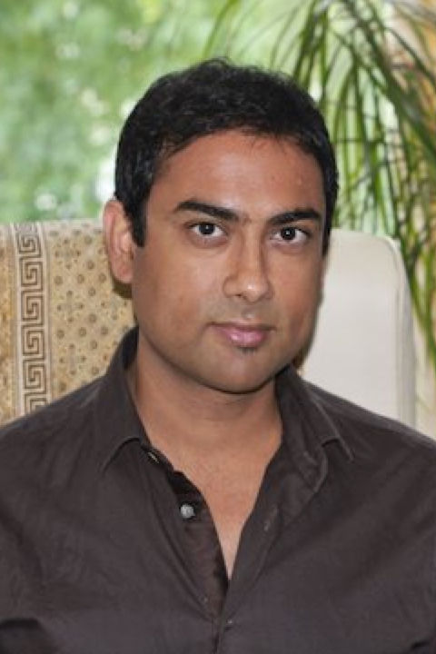

Hi there. I’m Terry Hall and I am one of the creators of The Mind Manifesto (MM), a whole set of toolboxes to help you evolve, by adjusting your mindset for personal health and well being and to counter the feelings of anxiety created by the overwhelming processes and choices we are presented with in today’s modern environment.
Like you, I have at times been exhausted, frustrated; have felt empty and despairing of the time it has taken to change my circumstances and, as our fast-paced world is presenting us with ever more issues to face up to, I realised I wasn’t alone in that. Many hundreds of thousands of people are experiencing a myriad of pressures and stresses unknown in previous times.
I have trained over some 23 years in multiple natural health disciplines, and am qualified in hypnotherapy, NLP, psychology, and counselling, as well as the physical disciplines such as massage and reflexology.
Working internationally for major blue chip companies as consultant and trainer has put me into close contact with the needs, requirements, obligations and desires of so many people across a broad spectrum of life experiences. Thus, I have taught and advised on such things as staff morale and personal improvement, customer service, behavioural patterns, constructive team building within the working environment, confidence building and cultural psychology – covering no fewer than 18 business specialisms to do with human inter-relationships. I believe a holistic approach properly considers the mental, emotional and spiritual aspects of the overall health of the body.
 Hi there, my name is Imran Ahmad and I am a music composer for film, radio and commercials. I have been fortunate to have my films that I have composed music for premiered around the world in cities such a Los Angeles and London, including the prestigious Cannes Film Festival in France.
I have been practicing meditation for several years and also create my own bespoke music for meditation practices. I have studied the various science, theologies and philosophies that surround ‘sound’ and ‘vibration’ and this has continued to fascinate me. Particularly at how the non-physical phenomenon of music can affect us emotionally in so many different ways and it’s contribution towards healing.
I have a lifelong interest in using sound and music to enhance creativity, productivity and our general wellbeing and feel it is my overall purpose of being a musician.